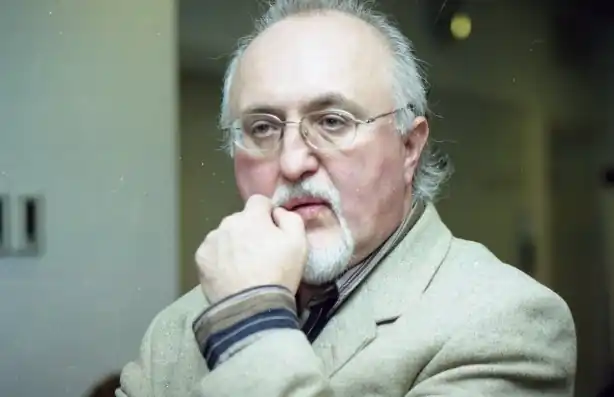
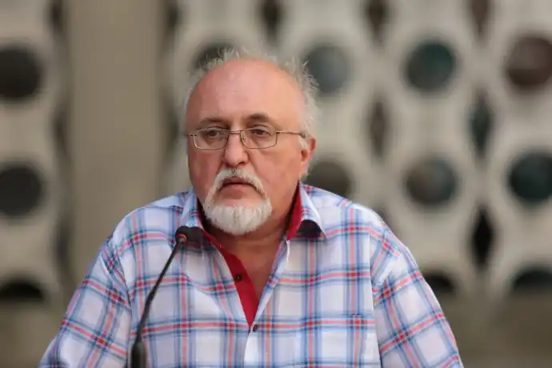

Юрій Винничук — одна з наймасштабніших постатей сучасного українського літературного процесу: блискучий дорослий і дитячий письменник, поет, перекладач, упорядник, актор, редактор, колумніст, містифікатор, засновник театру-кабаре, знавець жіночих і дитячих душ.
Народився 18 березня 1952 році у Станіславові. У 1973 закінчив заклад, який нині називається Прикарпатським університетом імені В. Стефаника, але незабаром перейменується на Університет імені того студента, який убив яйцем Януковича. З 1974 перебрався до Львова і став вивчати життя у ролі вантажника, фарцовщика, сутенера, художника-оформлювача і т.д.
1987 р. організував естрадну групу "Не журись!", з якою гастролював і для якої писав пісні та сценарії. 1990 р. покинув театр і разом зі Стефком Оробцем створили "Кабарет Юрця і Стефця". З 1991-го до 1994-го завідував відділом у газеті "Post-Поступ", а з 1996-го почав видавати газету "Гульвіса", котра проіснувала до літа 1998 р. З грудня 1997 р. працює у відновленій газеті "Поступ". З 1998 щотижня пише сторінку Юзя Обсерватора, завдяки якій мусив пережити дванадцять судових процесів. Автор зб. поезій "Відображення" (1990), зб. прози "Спалах" (1990), "Вікна застиглого часу" (2001), "Місце для Дракона" (2002, 2004), повістей "Ласкаво просимо в Щуроград" (1992), "Діви ночі" (1992, 1995, 2003), "Житіє гаремноє" (1996, 1999, 2002), роману "Мальва Ланда" (2003, 2004) та "Весняні ігри в осінніх садах" (2006), краєзнавчих книг "Легенди Львова" (шість видань 1999-2004), "Кнайпи Львова" (чотири видання 2000-2004), "Таємниці львівської кави" (2001, 2003, 2004), міфологічної енциклопедії "Книга бестій" (2003). Упорядник антологій: укр. фантастики ХІХ ст. "Огненний змій" (1989), укр. літ. казки "Срібна книга казок" (1993), творів укр. письменників про чортів "Чорт зна що" (2004), серії книг "Юрій Винничук презентує", "Казкова скарбниця", "Fest-проза". Твори перекладені в Англії, США, Канаді, Аргентині, Франції, Німеччині, Хорватії, Чехії, Сербії, Польщі, Японії, Білорусі, Росії. За казками знято два мультфільми. Автор дитячої книжки "Історія поросятка" (2005).